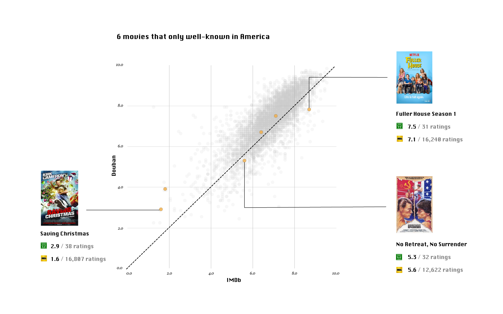

Is there any movie well-known in North America but barely heard of in China?
by CHEN WANG | July 23, 2017
I found 5,459 movies that have ratings on both IMDb and Douban, after analyzing 40,810 movies on Douban (豆瓣), a popular Chinese social networking service website allowing registered users to record information and create content related to film, books, music, recent events and activities in Chinese cities. The difference are the movies: (1) has an IMDb page but doesn't have enough voters on IMDb or/and Douban to generate a rating; (2) doesn't have a IMDb page. Among these 5,450 movies, 2,345 movies have more than 10,000 ratings on both IMDb and Douban. The best movie is the BBC documentary "Planet Earth Season 2", which has a rating of 9.6 on IMDb and 9.9 on Douban, and the worst is the Korean fantasy movie "Dragon Wars: D-War", 3.6 on IMDb and 4.0 on Douban.
However, is there any movie well-known in North America but barely heard of in China?
The answer is, yes, but not many.
It is not surprising that all the 30 movies only popular on Douban can be classified into only 5 categories. Ayashiki mono no na(Natsume's Book of Friends 3) is the third season of an anime television series adaption of a Japanese fantasy manga series "Natsume's Book of Friends". In the manga series, Takashi Natsume, the protagonist, has had the ability to see spirits, inheriting the power from his grandmother Reiko Natsume, who bequeathed to her grandson her Book of Friends upon her death, a book containing the names of spirits she had bullied into servitude. Takashi spends his time dissolving the contracts and releasing the various spirits that come to him for help.

The movies only well-known in America is much fewer than those only well-known in Asia, and all of them are American movies or TV series.
